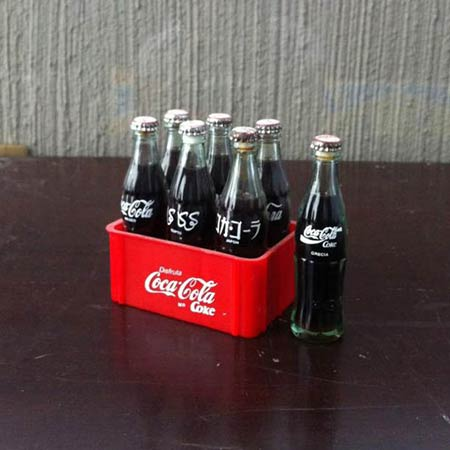
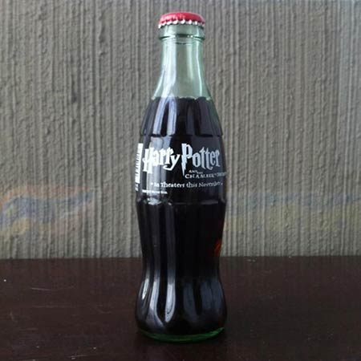
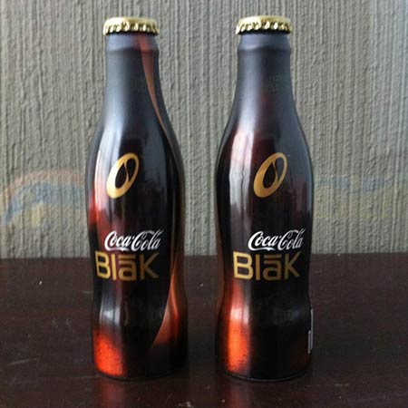

My Coca-Cola Hobby
More than a hobby, it is an obsession. I am Hector Arevalo and I collect Coca-Cola bottles. It started over twenty years ago. My grandfather owned a convenience store. Coca-Cola was his supplier, so he received promotional items, which ended up being gifts for his grandsons.
As you can imagine, I ended up with a variety of items including pins, yoyos, scale cars, drinking glasses and collector plastic cups. It seemed like my grandfather owned the Coca-Cola Company. Even though I had a lot of branded products, the bottle collection started with a specific item. Early in the 1990s, a six-pack of mini bottles from around the world was released, each glass bottle, filled with liquid, had the Coca-Cola logo and Country of origin printed on serigraphy. That's the reason my collection for bottles began.
My collection mostly includes 8oz glass bottles, although different materials, sizes and themes can make it in. One of my favourites is a special edition bottle issued in 2002 celebrating the release of the movie Harry Potter and the Chamber of Secrets. It is an 8oz glass bottle printed with the logo of the second instance in the series. Although commercially it does not have a high value, I like the fact that both brands are together on a single item.
A second item I would like to highlight is a bottle for a product that is no longer in the market. Coca-Cola Blak, a coffee-flavour soft drink, released in France in 2006. It was the first aluminium "contour bottle" on the market. My father brought some to me from a trip to Europe. I had three, but I could not miss the opportunity to taste this drink. I did not find the flavour especially pleasant, but it wasn't bad. I had a chance to try the North American version on my trip to New York City later that year but did not bring a bottle because it had a screw cap, and I only add “crown” cap items.
My craziness does not stop there. In 2012, I bought a regular 8oz Coke bottle and requested to a Huichol artisan to decor it with Huichol art. Usually, Huicholes cover wooden figures with small colourful beads. It took two weeks for the artist to complete the project, and the result is fascinating. Besides, I can claim this is the only bottle in the world with this specific design.
By now you might have a better idea of how I feel about the brand. While my collection is not the largest, I have more than 100 bottles from around the world. But what makes my collection special? The fact that each bottle represents a story, a person, a place and a time in my life.